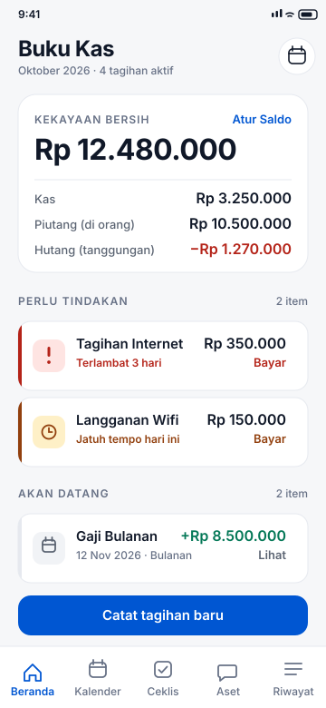
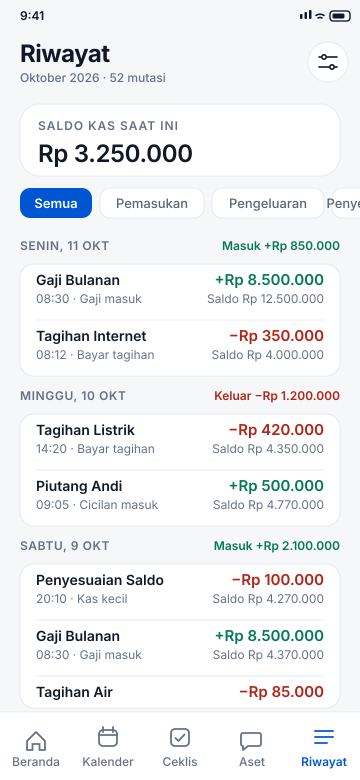
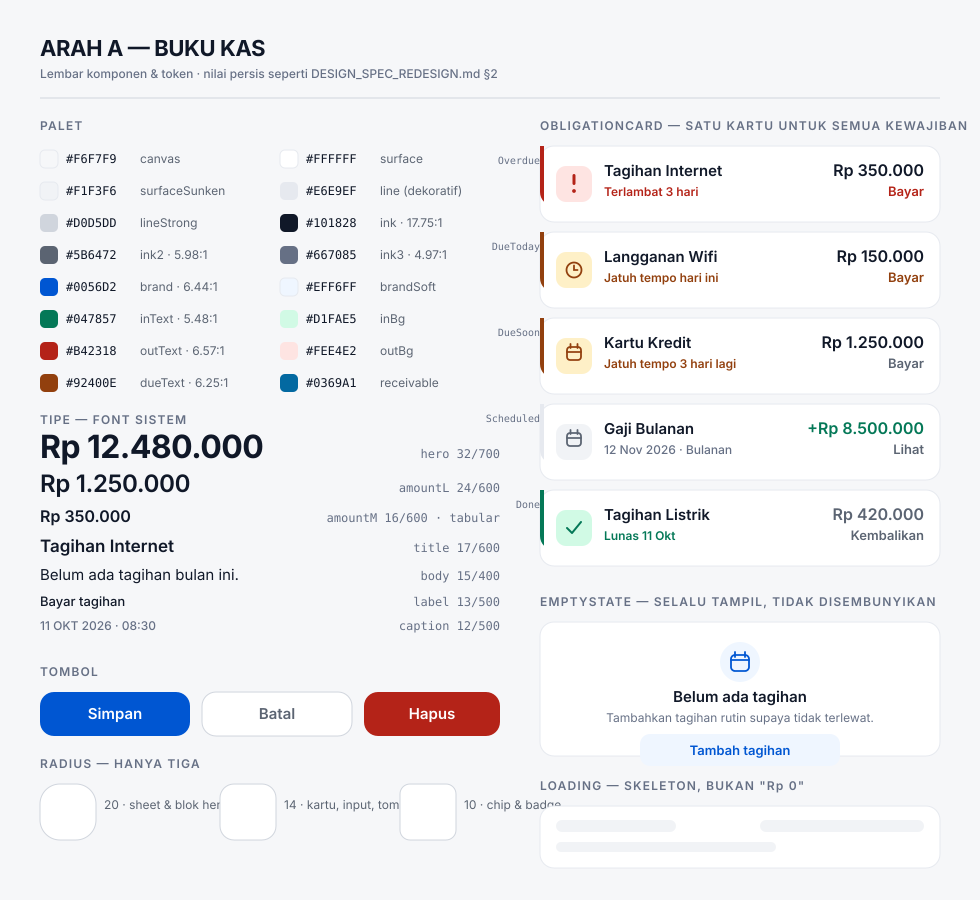
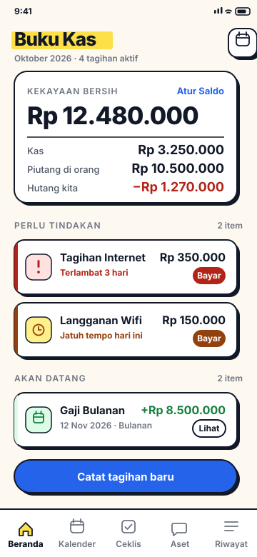
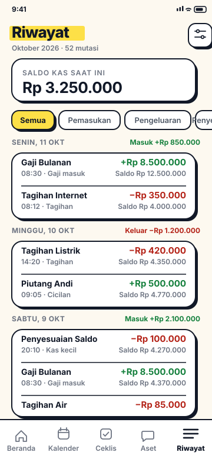
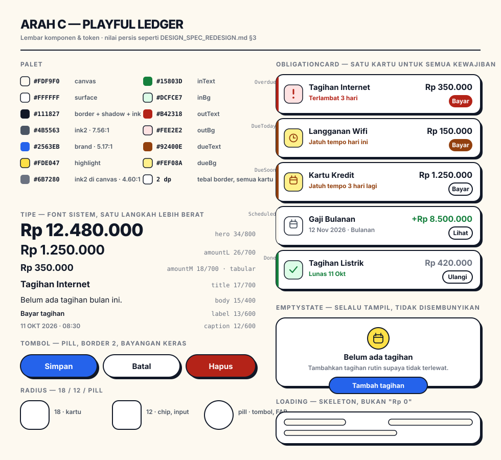

Pratinjau Desain · belum dieksekusi
Dua arah visual dengan struktur informasi yang identik. Yang berbeda hanya warna, tipografi, bentuk, dan gerak. Memilih salah satu tidak mengubah arsitektur aplikasi, alur, atau logika saldo — hanya tampilannya.
Tenang, presisi, jujur. Kartu gradient bergaya kartu ATM dihapus, diganti Balance Sheet Block berisi empat baris nilai yang memang isi sebenarnya dari kartu itu. Kartu didefinisikan oleh garis 1px, bukan bayangan. Biru dipakai hemat, bukan sebagai header semua layar.



Bugna hangat, border hitam 2px, bayangan keras tanpa blur, warna blok solid. Karakter kuat membuat aplikasi terasa seperti buku catatan fisik dengan stiker — sesuatu yang ingin dibuka, bukan yang harus dibuka.



| Aspek | Arah A — Buku Kas | Arah C — Playful Ledger | Status |
|---|---|---|---|
| Warna | Neutral sejuk, biru dipakai hemat | Kertas hangat, kuning sorot, border hitam | Berbeda |
| Tipografi | 32/24/17/15/13/12 · weight 400–700 | 34/26/18/17/15/13/12 · weight 400–800 | Berbeda |
| Bentuk | Radius 20/14/10, garis 1px, tanpa bayangan | Radius 18/12/pill, border 2px, bayangan keras | Berbeda |
| Kartu hero | Balance Sheet Block (4 baris nilai) | Balance Sheet Block (4 baris nilai) | Sama |
| Struktur Beranda | Header → Balance Sheet → Perlu Tindakan → Akan Datang → 1 CTA | Sama | |
| Struktur Riwayat | Saldo → filter → grup per tanggal → saldo berjalan per baris | Sama | |
| Komponen | ObligationCard (5 state), LedgerRow, MoneyText, AppHeader, EmptyState, ConfirmSheet, UndoSnackbar | Sama | |
| State | loading (skeleton, bukan “Rp 0”), empty selalu tampil, undo setelah hapus | Sama | |
| Aksesibilitas | Kontras ≥ 4.5:1, lantai teks 12sp, target ketuk ≥ 48dp, status selalu ada teks | Sama | |
| Perbaikan P0 | Delapan perbaikan mendesak — dikerjakan tanpa menunggu pilihan arah | Sama | |
Delapan perbaikan ini tidak mengandung keputusan estetika. Hasilnya tetap valid di Arah A maupun Arah C, jadi bisa dikerjakan lebih dulu sementara kamu memutuskan arah visualnya.
isInitialized sudah ada di ViewModel tapi belum dipakai UI — render — + skeleton.MainActivity memanggil deleteSchedule / deleteDebt langsung, dipicu dari 9 tombol.error = ExpenseRed, sehingga dua makna berbagi satu warna.Checkbox yang tidak pernah tercentang. Dua tempat mengunci checked = false; kontrol itu berbohong.
Spesifikasi penuh ada di DESIGN_SPEC_REDESIGN.md: token warna lengkap dengan rasio kontras
terverifikasi, skala tipografi, spesifikasi tiap komponen, rancangan kelima layar, penanganan state,
aturan aksesibilitas, batasan implementasi, kriteria selesai per tahap, dan 8 pertanyaan yang perlu
dijawab sebelum eksekusi.
Analisis kondisi saat ini ada di DESIGN_CONTEXT.md. Mockup digambar pada lebar 360dp
(layar Android terkecil yang umum); angka, teks, dan warna di dalamnya adalah nilai persis dari spesifikasi.